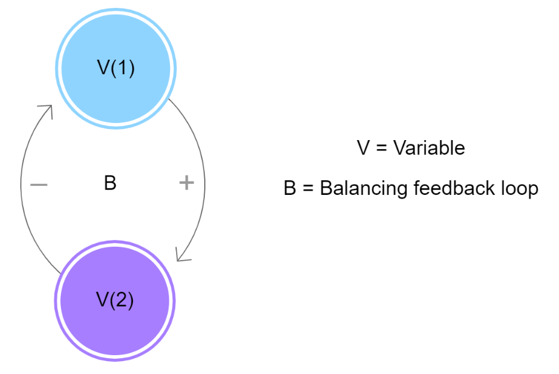
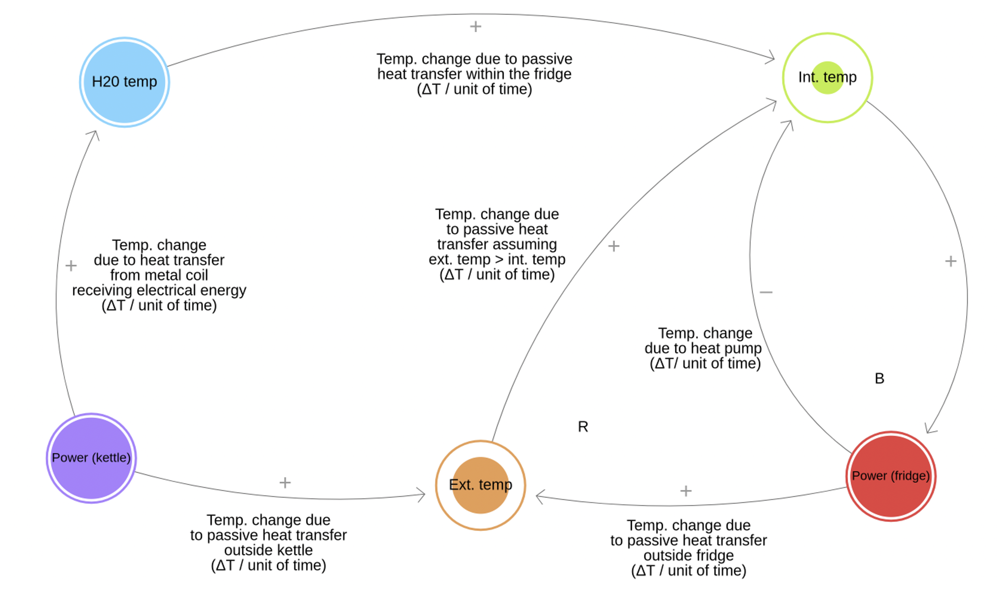
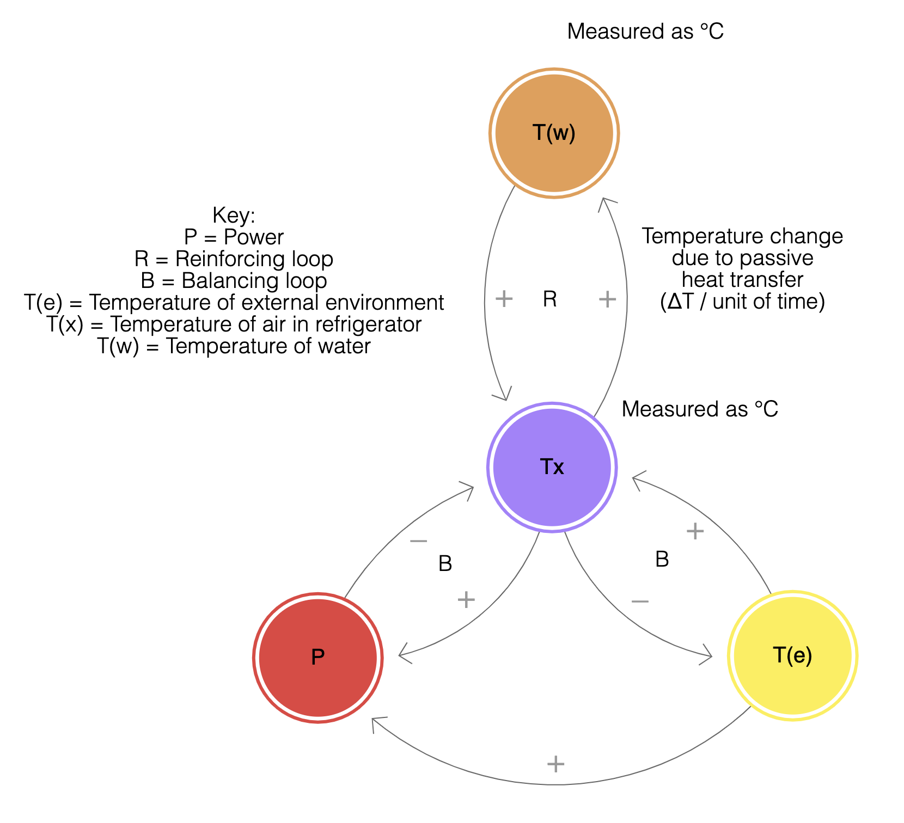
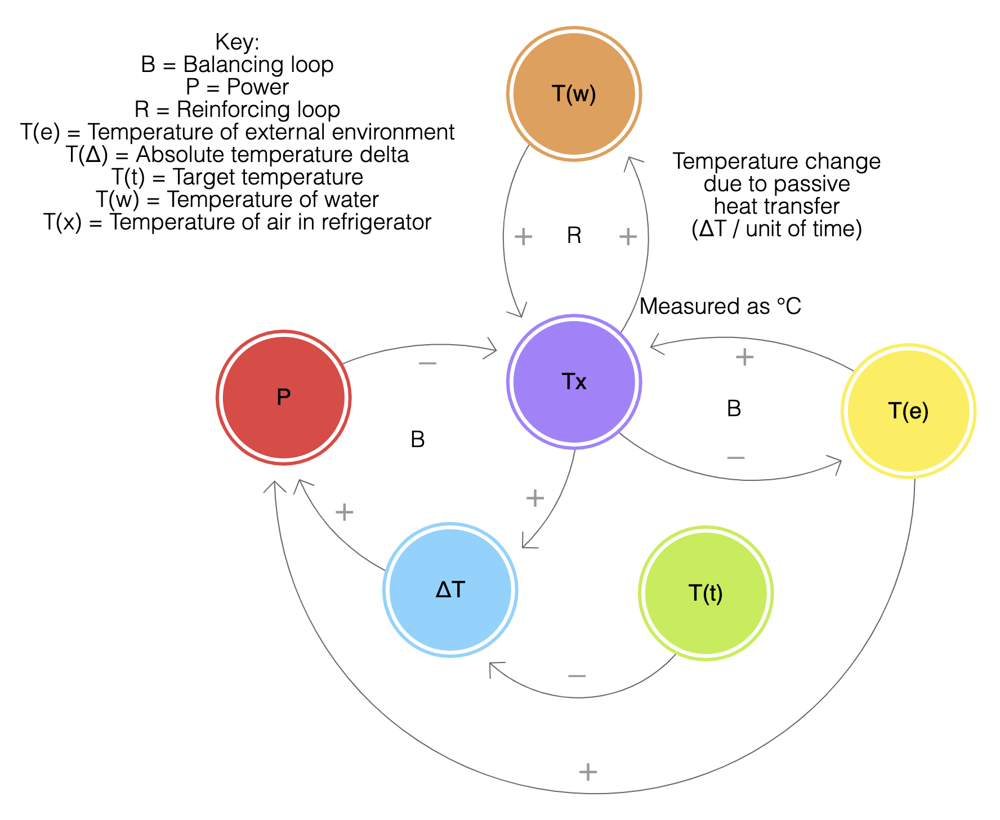
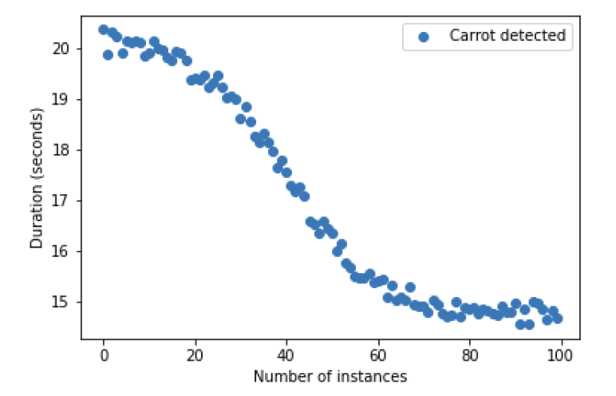

This post focuses on my understanding and development of causal loop diagrams (CLDs) to represent feedback loops within systems.
The content in this post is based on my experience developing a CLD for a homework task and a group project (see link to 'Tappy' below for the final prototype).
Causal loop diagrams (CLDs) assist system thinkers to understand and describe the structure of feedback loops
within socio-technical systems (Sterman 2000). In the sections below I provide a high-level overview of CLDs,
present and discuss the development of my first CLD based on observations of a refrigeration system, and present
a CLD used to demonstrate the key feedback loop in Tappy (see link opposite) to a general audience. The inclusion
of CLDs developed at the start and end of semester is intended to demonstrate progression in my understanding of
the purpose and value of CLDs – particularly for communication to a general audience.
Overview of CLDs
A CLD is a causal diagram that aids in visualising how different variables in a system are interrelated. The diagram
consists of a set of circles and arrows. Circles represent the variables and arrows are the causal links that represent
a connection between two variables. Finally, causal links may be:
• Positive: meaning two variables change in the same direction, i.e. the more one variable goes up, the more the connected
variable goes up OR the more one variable goes down, the more the connected variable goes down.
• Negative: meaning that the two variables change in opposite directions, i.e. the more one variable goes up, the more the
connected variable goes down OR the more one variable goes down, the more the connected variable goes up.
The combination of variables and causal links create causal loops. Loops may be reinforcing or balancing. In a reinforcing loop,
change in one direction is compounded by more change. In a balancing loop, change in one direction is balanced by change in
the other direction (also known as oscillation or movement towards equilibrium). An example of a balancing loop is presented below.

Refrigerator CLDs
Early in the semester I conducted an experiment to determine the effect of my partner placing a mug of tea in the fridge in summer.
The experiment investigated the effect of placing a ceramic mug of water at 70°C, 60°C and 50°C in a refrigerator on the temperature
of the water and on the ambient temperature of the refrigerator, over 3 x 3 minute intervals. Based on Newton’s law of cooling
(Winterton 1999), I assumed that water with a high temperature would reduce in temperature at a faster rate than water with a low
temperature.
The experiment indicated that the water placed in the refrigerator reduces in temperature, at all three temperatures and across all
time intervals. The temperature of the water at the start of the experiment affected the rate of temperature change during the experiment.
Finally, the ambient temperature of the refrigerator reduced from the time the mug was placed in the refrigerator until the end of
the experiment. Full details on the experiment can be viewed in the 'Experiment report and feedback' document
here.
The diagrams below focus on the CLD I developed iteratively throughout the experiment to represent the key feedback loops within the
refrigeration system that related to my research question. This CLD was intended to communicate my understanding of these feedback loops
to fellow students and staff. Using Proust and Newell (2020) as a guide, I produced my first CLD shown below.
NB: all assumptions and errors made in the experiment can be viewed in the document linked above. However, two key assumptions to note
when reading the CLDs presented below is that both the temperature of the water and the temperature of the external environment to the
refrigerator is consistently greater than the temperature of the air in the refrigerator. Were the experiment to have been conducted in an
environment colder than a refrigerator, or using water colder than a refrigerator, the CLDs would need to be reviewed and updated.

After presenting this map to fellow students I realised I had erred in attempting to represent the entirety of the refrigeration system
with a CLD, rather than the discrete feedback loops that were relevant to my experiment. As I did not understand the physics of a
refrigeration system prior to the experiment, I found it interesting and informative to attempt to map all variables in the system and
link them together. However, in doing so I lost sight of the purpose of constructing the diagram – to communicate my understanding of
the feedback loops to others.
In the next iteration I focused on identifying the feedback loops that were relevant to my experiment and representing them in a simple,
clear way. I removed the ‘Power (kettle)’ state variable and related feedback loops and focused my labels on the key measurements I
intended to conduct for my experiment, rather than all potential measurements. The second iteration of my system map is shown below.

Further discussions with faculty assisted me to identify that the positive connection between the temperature of air in the
refrigerator and power in the diagram above was incorrect, and the diagram required intermediate variables between the two
to accurately represent the feedback loop. In layperson terms – an increasing temperature in the refrigerator did not directly
result in increasing power consumption. The diagram required two additional state variables for the ‘target temperature’
(altered by shifting the thermostat in the refrigerator) and the ‘absolute temperature delta’ (the absolute value of the
difference between the ‘target temperature’ and the ‘temperature of air in the refrigerator’), as well as causal links between
the existing and new variables. The ‘delta’ became the variable of focus for the CLD – as shown in the final diagram below,
and explained further below.

An example (again, in layperson terms): assuming that one starts at a point of equilibrium between the target temperature and the
temperature of the air in the refrigerator, when the target temperature decreases, the delta between the target temperature and the
temperature of air in the refrigerator increases, which also increases the power required from the fridge, which then decreases the
temperature in the refrigerator, which also decreases the delta between the target temperature and the temperature of the air in the
refrigerator (a balancing loop). Through these discussions with staff I learnt about the importance of including ‘delta variables’ in
CLDs to accurately represent the relationships between other variables in dynamical systems.
CLDs provided a simple, clear method to represent the hypothesis and mental model I had formed from the experiment about the feedback
loops operating refrigeration system. However, the experiment clarified that while CLDs are useful for representing discrete feedback
loops, they are less effective at representing all connections in a system. Reducing all the elements and interconnections in a system
to equally sized variables and causal links either oversimplified the system and its behaviour, or became confusing for the audience of
the CLD. The key lesson for me from this experience was to focus on discrete feedback loops you intend to communicate to your audience
with CLDs, rather than attempting to account for the entire system with CLDs.
In addition, loopy was an easy-to-understand tool to draw and test CLDs with very high-level simulation (e.g. 2-3 rounds of a feedback
loop). However, the simulation capability provided by loopy is insufficient to demonstrate the effect of a feedback loop over an extended
period of time or loops. This became important for our prototype smart tap, as discussed below.
Tappy CLDs
Tappy is a dynamical system that is intended to reduce the volume of water delivered for classes of objects over time based on feedback
from use of the tap (see link opposite for more information on the prototype). To demonstrate our system and its effect over time to a
general audience on demonstration day, our team first discussed developing a stock and flow diagram (‘SFD’) (more on SFDs here).
However, our team’s first attempts at SFDs were more confusing than clarifying for our trial audiences. We fell back into the trap of
trying to represent the entire system with the SFD, rather than the discrete feedback loop we intended to communicate through the demonstration.
The balancing feedback loop in this dynamical system we intended to communicate is explained with an example below:
• Assume Tappy is preset to open for 20 secs if presented with a carrot, with a regulated flow rate.*
• Suppose a user only washed a carrot for 15 secs, after which the user removed the carrot from under the tap.
This is a 5 second difference (or ‘delta’), and our prototype tap learns that it is probably overestimating the volume of water for a carrot.
• Next time you wash a carrot Tappy will open for less time – assume, for the sake of the example, for 19 seconds instead of 20 seconds.
This loop continues until there is an equilibrium point – say 15 seconds.
*Note: the flow rate settings in Tappy for each object class do not change over time, only the duration. Altering duration settings
is the only method to reduce the volume of water delivered by Tappy for an object class.
Ultimately our team agreed to focus on a CLDs to more clearly communicate the key feedback loop in our prototype for our audience.
This CLD incorporated the lessons learnt from the refrigerator experiment, adding a ‘delta’ variable for the difference between the
original “setting duration” (or preset) and the “actual duration” (or the duration a user actually washes the carrot).
See the video below for a high-level simulation of this feedback loop.
While the video was effective to visualise the early stages of the example presented earlier, it did not clearly demonstrate the
effect of the feedback loop over time. In addition, we were not able to measure the effect of our prototype and its feedback loop
in a household prior to the demonstration day. Instead, our team started with a simulation of a differential equation and solved
for it to determine the sigmoid curve over 0 – 100 instances of use identifying a carrot. This basic simulation was presented at
demonstration day and is included below. Starting at 20 second, the original setting duration stored on the device reduces over
100 instances to 15 seconds where it reaches equilibrium.

There is still further work to do on our prototype, particularly with respect to simulation and modelling. Given the intent of our
prototype to improve water efficiency over time, we need to model or measure the volume of water saved by the prototype over time
o demonstrate its value (not only the duration of flow for certain items). This is likely to require more complex system modelling
than CLDs allow, for example through stock and flow diagrams.
Overall, however, CLDs proved useful to represent a discrete feedback loop in our prototype cyber-physical system to a general audience.
Combining CLDs with supplementary materials such as the graphical simulation presented earlier also proved an effective approach to
communicating the effect of our key feedback loop over time. The key lesson from this experience is that one must consider the intention
for a method before using CLDs. If intending to communicate discrete feedback loops to a general audience, CLDs may be suitable.
If more rigorous modelling or simulation of a system’s effects are required, other methods may be more suitable.
I look forward to further exploring the value of CLDs and other methods of system dynamics at Google PAIR for my capstone.
I will be considering how systems dynamics methods might create a language for community stakeholders
Sterman, J (2000) Business Dynamics: Systems Thinking and Modeling for a Complex World, Irwin/McGraw-Hill, Boston.